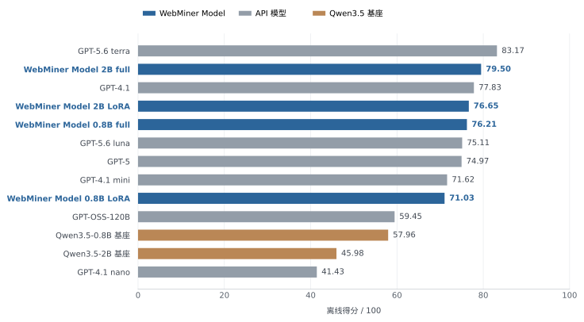

WebMiner
Building our own models through post-training
High-quality, low-cost extraction from business websites
From direct supervised fine-tuning to stepwise supervision and five-task mixed training
Abstract
WebMiner post-trains small, open-weight language models for high-quality, low-cost structured data extraction from business websites. The upstream system visits websites listed in Google Maps business profiles and converts their HTML into Markdown. Given the website URL and complete Markdown, the model extracts business identity, contact details, descriptions, and staff information. Our training approach evolved from supervised fine-tuning (SFT) on final structured answers to five-task mixed SFT that combines intermediate tasks, such as business identification, with the final extraction task. On the test set, the fully fine-tuned 2B WebMiner Model exceeds GPT-5.6 luna in extraction quality and approaches GPT-5.6 terra. In this test, the estimated local generation cost of the fully fine-tuned 2B model is approximately 1.54% of GPT-5.6 terra's API charges.
1 Background and task definition
The upstream system scans geographic regions on Google Maps, saves business listings, and visits their registered website URLs to retrieve HTML and convert it into Markdown. WebMiner processes this saved text to turn scattered business information into a consistent structured object. The target business listed on Google Maps serves as the reference for determining which webpage information belongs to it; the website URL and Markdown provide the evidence available to the model.
Collection starts with a Google Maps business listing and its registered website URL
Before extracting business information, the model must determine whether the page still provides valid information about the target business, then establish which content belongs to it. For example, an abandoned business website may be replaced by a domain-for-sale page. In that case, the business information should be treated as unavailable, rather than extracting the domain provider's details as if they belonged to the business. On a third-party platform, a business profile may appear alongside platform support details and customer reviews. The model must focus on the target business: platform support phone numbers and email addresses must not be attributed to the business, and customer names in reviews must not be mistaken for employee names. A field's presence on the page is only the starting point; evidence that it belongs to the target business determines whether it should be extracted.
In addition to resolving attribution, the model must handle noise introduced during
HTML-to-Markdown conversion, including excess whitespace, escape characters,
encoding errors, and joined text. Training and evaluation use saved, fixed page
text. Extraction must be grounded in that text, without inventing missing
information or business relationships. When a page provides valid information about
the target business, the model organizes it into a schema-compliant info
object; when the page is unsuitable for business information extraction, it returns {"info": null}.
2 From SFT to stepwise SFT
2.1 Learning the final structured output directly
Early SFT paired webpage inputs with final structured answers generated by a teacher model. Given the task instructions, URL, and Markdown, the model learned to generate the complete structured answer. Training used the standard autoregressive objective: predicting the next target token conditioned on the input and preceding target tokens. The examples included both valid and invalid pages, teaching the model to extract business information in the required format and to return a null result when a page was unsuitable.
Direct SFT provides the final structured answer but does not explicitly expose the dependency between identifying the business and extracting information about that business. A central difficulty in early training was that the model struggled to learn this dependency reliably from input–answer pairs alone. It could fill fields with information found on the page without checking whether that information belonged to the target business. We therefore moved to stepwise SFT, making business identification, contact attribution, description summarization, and staff selection explicit. Each decision becomes a verifiable training objective with its own inputs, labels, and validation rules.
These intermediate tasks provide more granular learning signals, allowing the model to learn business identification and extraction conditioned on that identity. We train them as auxiliary objectives alongside the end-to-end (E2E) task of generating the final result. The aim is to support learning the complete extraction task by teaching the capabilities required at each step.
2.2 Decomposing extraction into independent supervised tasks
The same webpage extraction task can be learned directly from its final result or decomposed into individual decisions. The E2E task takes the URL and complete Markdown and generates the final structured result in one pass. The stepwise tasks first identify the business and determine whether the store is valid. An invalid store returns info=null immediately, skipping further extraction and assembly. For a valid store, the identity result and source material are supplied to three tasks: contact extraction, business description, and staff extraction. Each extracts information about the same business independently of the other tasks' outputs. The identity and the three extraction results together form the final result.
E2E · End-to-end extraction
1 supervised taskinfo
Stepwise · Identify, then extract
4 supervised tasks{"info": null}
Stop; skip further analysis
Source material + identity result as input to each task
info
| Task | Input | Supervision target |
|---|---|---|
| Business identification | URL and complete Markdown | Six identity fields |
| Contact details | Source material, confirmed identity, and contact candidates | Email addresses and phone numbers confirmed to belong to the target business |
| Business description | Source material and confirmed identity | Six description fields |
| Staff extraction | Source material and confirmed identity | Names and roles, up to 20 people |
| Combined output (E2E) | URL and complete Markdown |
{"info": object or null}
|
2.3 Mixed training and checkpoint selection
A single business webpage can produce training examples for several tasks. We
shuffle examples from all tasks together and use each example once per epoch. Loss
is computed only on the current task's target answer; identity information supplied
as input context does not contribute additional loss. For business examples judged
invalid or otherwise unsuitable for further extraction, we retain only the identity
task and the null-output target (info=null), without constructing contact, staff, or description extraction tasks.
To emphasize the final extraction result, we assign a loss weight of 0.5 to the combined task and 0.125 to each of the four intermediate tasks. Each task's loss is first normalized by its target token count so that longer answers do not dominate training. At each optimization step, weights are then renormalized across the tasks present in that step.
During training, we track validation loss for all five tasks and select the checkpoint with the lowest combined-task validation loss for final evaluation. All four models use the same training workflow and data, each starting independently from a pinned version of the original Qwen3.5 base model. This compares full fine-tuning with LoRA at both 0.8B and 2B scales.
3 Data and experimental setup
3.1 Data selection and freezing
The training data must cover standard business extraction as well as different languages, inactive websites, and unusual page content. We therefore retain 705 multilingual or non-English examples and 1,285 examples flagged for abnormal website service status or page content. The groups overlap by 118 examples, giving 1,872 distinct examples. We then sample 1,000 additional examples without replacement from the remaining businesses whose service status and page content are both normal, using a fixed random seed of 42 for reproducibility.
After excluding training examples that exceed the length limit or duplicate test data, the dataset contains 2,869 business examples, expanded into 13,718 applicable task records. All 705 multilingual or non-English examples and the 1,000 additionally sampled normal examples are retained. Every task record derived from the same business example stays in the same split, rather than being distributed across training, validation, and test sets.
Before training, we fix the webpage inputs, supervision labels, and data splits, and record the example lists and exclusion reasons. This is the data-freezing process. All four models use the same frozen data to keep the data conditions consistent. Page text is not truncated; records exceeding the length limit or unsuitable for a task are excluded, with reasons retained for review.
| Split | Businesses | Identity | Contacts | Description | Staff | Combined | Total records |
|---|---|---|---|---|---|---|---|
| Training | 2,869 | 2,869 | 2,658 | 2,667 | 2,657 | 2,867 | 13,718 |
| Validation | 158 | 158 | 153 | 153 | 153 | 158 | 775 |
The test set contains 100 examples. All reported scores, failure counts, and total costs refer to this test set.
3.2 Models and optimization settings
We evaluate Qwen3.5-0.8B and Qwen3.5-2B, using both full language-model fine-tuning and LoRA at each scale. Full fine-tuning leaves the vision module unchanged. LoRA retains a separate adapter, while the merged model is used for this evaluation.
| Epochs and batch size | 1 epoch; microbatch=1; gradient accumulation=16 |
|---|---|
| Full fine-tuning learning rate | 2 × 10−5 |
| LoRA settings | Learning rate: 1 × 10 −4; rank=16; alpha=32; dropout=0 |
| Numerical precision | BF16 computation; FP32 trainable parameters |
| Sampling and schedule | seed=42; global shuffle; cosine; warmup=5%; weight decay=0.01 |
| Maximum sequence length | 131,072 tokens; no truncation |
| Checkpoint selection | Lowest combined-task validation loss |
3.3 Evaluation and cost accounting
All models use the same test set. Each request provides only the website URL and complete Markdown, and the model generates the final structured result in one pass without reference answers for intermediate tasks. Results are compared with fixed reference answers using a common scoring procedure, yielding a score out of 100. Failed requests, generation failures, and outputs that fail format validation receive zero points.
Reasoning is disabled wherever possible. Models that cannot disable it use their lowest supported setting: minimal for GPT-5 and low for GPT-OSS-120B. The GPT-4.1 family does not support this feature. The actual settings are listed in the results table.
Locally run WebMiner Model and Qwen base models use batches of 20 examples. API models and Qwen base models have a maximum output length of 8,192 tokens; WebMiner Model uses 4,096 tokens.
Costs cover the entire test set. API costs are the recorded charges for all
requests. For local models, we sum the measured generation time across batches and
convert it using a server price of $1.99 per hour for a machine with one A100 40GB
SXM4 GPU:
Cost = generation seconds ÷ 3,600 × 1.99 . Local costs estimate the generation stage only. They exclude model loading, input
preparation, scoring, additional storage, and taxes, so their accounting scope
differs from API charges.
4 Evaluation results
Table 1 lists the 13 selected models in descending order of test-set score. WebMiner Model 2B full scores 79.62 and ranks second in this group, 1.79 points above GPT-4.1 and 3.55 points below GPT-5.6 terra.

| Rank | Model | Reasoning | Score /100 | Failures | Cost (USD) |
|---|---|---|---|---|---|
| 1 | GPT-5.6 terra | Off | 83.17 | 0 | $2.7621 |
| 2 | WebMiner Model 2B full | Off | 79.62 | 0 | ≈$0.04249 |
| 3 | GPT-4.1 | Not supported | 77.83 | 0 | $3.0920 |
| 4 | WebMiner Model 2B LoRA | Off | 76.27 | 0 | ≈$0.04207 |
| 5 | WebMiner Model 0.8B full | Off | 76.15 | 0 | ≈$0.03214 |
| 6 | GPT-5.6 luna | Off | 75.11 | 0 | $0.2757 |
| 7 | GPT-5 | minimal | 74.97 | 0 | $1.5888 |
| 8 | GPT-4.1 mini | Not supported | 71.62 | 0 | $0.5320 |
| 9 | WebMiner Model 0.8B LoRA | Off | 70.70 | 0 | ≈$0.03228 |
| 10 | GPT-OSS-120B | low | 59.45 | 1 | $0.0869 |
| 11 | Qwen3.5-0.8B base | Off | 56.94 | 0 | ≈$0.03986 |
| 12 | Qwen3.5-2B base | Off | 44.93 | 0 | ≈$0.05058 |
| 13 | GPT-4.1 nano | Not supported | 41.43 | 0 | $0.1219 Average: $0.001219 / example |
≈ indicates an estimate for local generation costs. “Not supported” refers to reasoning; minimal and low are the actual reasoning levels used. The source report includes other models; this page presents only the 13 listed above.

4.1 Observations
- Fine-tuned models outperform their corresponding base models. The 2B full and LoRA models exceed the 2B base by 34.69 and 31.34 points, respectively. The 0.8B full and LoRA models exceed the 0.8B base by 19.21 and 13.76 points, respectively.
- Full fine-tuning scores higher at the same model size. 2B full exceeds 2B LoRA by 3.35 points, and 0.8B full exceeds 0.8B LoRA by 5.45 points. The two methods differ in learning rate and which parameters are updated.
- In this evaluation, the fully fine-tuned 0.8B model has the lowest estimated generation cost. The estimated generation cost per 100 examples is approximately $0.03214 at a score of 76.15. For 2B full, it is approximately $0.04249 at a score of 79.62.
This evaluation shows that small models post-trained specifically for business website extraction can approach GPT-5.6 terra in extraction quality at a lower generation cost.